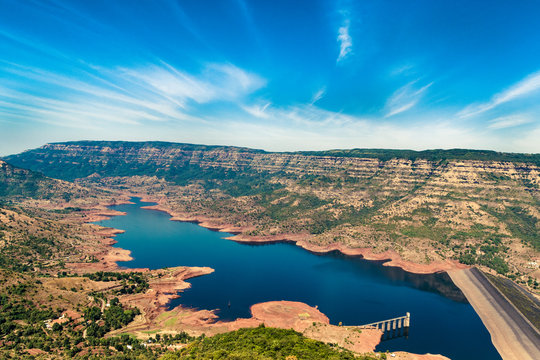
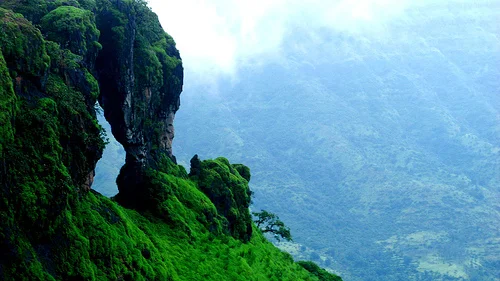

Introduction
Mahabaleshwar, nestled in the Sahyadri range, is a popular hill station in Maharashtra known for its breathtaking landscapes, lush greenery, and historic charm. Famous for its strawberries, waterfalls, temples, and pleasant climate, it serves as an ideal retreat for nature lovers and adventure seekers alike. The town has a rich colonial history, with British-era architecture and stunning viewpoints that offer mesmerizing vistas of the Western Ghats.
Visitor Information
Mahabaleshwar is home to several tourist attractions, including Arthur's Seat, Venna Lake, Mapro Garden, Pratapgad Fort, and Elephant’s Head Point. Visitors can indulge in activities like boating, horse riding, trekking, and enjoying fresh strawberry delights. The town also serves as a pilgrimage site, with the Mahabaleshwar Temple dedicated to Lord Shiva.
Best Time to Visit
The best time to visit Mahabaleshwar is from October to June. The winter months (October to February) offer cool and pleasant weather, making it ideal for sightseeing and trekking. Summer (March to June) is also a great time to visit, with slightly warmer temperatures but still comfortable. The monsoon season (July to September) transforms the region into a lush green paradise, although heavy rains may limit outdoor activities.
Key Attractions
Key Attractions in Mahabaleshwar:
1. Arthur’s Seat: One of the most famous viewpoints offering stunning views of the valleys and the Savitri River.
2. Venna Lake: A serene lake where tourists can enjoy boating, horse riding, and street food.
3. Elephant’s Head Point: A rock formation that resembles an elephant's head, offering mesmerizing views.
4. Wilson Point: The highest point in Mahabaleshwar, perfect for watching the sunrise.
5. Pratapgad Fort: A historic fort built by Chhatrapati Shivaji Maharaj, offering a mix of history and adventure.
6. Lingmala Waterfall: A picturesque waterfall that looks stunning, especially during the monsoon season.
7. Mapro Garden: A famous spot known for strawberry farms, fruit products, and delicious strawberry cream.
8. Panchgani: A nearby hill station famous for its tableland and breathtaking views.
9. Connaught Peak: A lesser-known yet amazing viewpoint offering panoramic views of Mahabaleshwar.
10. Mahabaleshwar Temple: A sacred temple dedicated to Lord Shiva, attracting devotees and history lovers.
Best food
Strawberries & Cream: A must-try dessert made with fresh local strawberries.
Mulberries & Raspberries: Fresh seasonal fruits available at local farms.
Corn Patties: A popular snack in the hill station.
Chikki & Fudge: Famous sweet treats available in local shops.
How to Reach
By Air: The nearest airport is Pune International Airport, about 120 km away. From there, one can hire a taxi or take a bus to Mahabaleshwar.
By Train: The closest railway station is in Satara, approximately 60 km away. Pune and Mumbai also have well-connected rail networks with road transport options to Mahabaleshwar.
By Road: Mahabaleshwar is well-connected by road with Mumbai (260 km) and Pune (120 km). State-run and private buses operate frequently, or visitors can opt for self-drive or taxi services.
Location
Gallery

